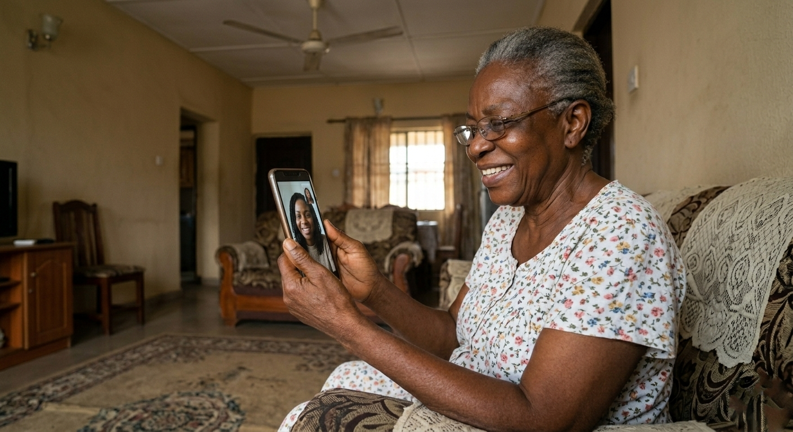

You wake up in London, Houston, or Toronto. You make your tea or coffee. And the first thing you do is check your phone. Any missed calls from Nigeria? Any messages from your mother's neighbour? Any alerts from the camera you installed in the living room?
This is the reality for millions of Nigerians in the diaspora. You left Nigeria chasing opportunities, building careers, and creating better lives. But you left behind the people who mean the most to you. Your aging parents. And every day, you worry.
Are they eating well? Have they taken their medications? Did they fall? Who will drive them to the hospital if something happens?
The guilt is real. The anxiety is exhausting. And the distance makes everything harder.
But here is the good news. With the right systems, technology, and partnerships, you can effectively monitor and support your elderly parents from anywhere in the world. You do not have to choose between your life abroad and your parents' well-being at home.
Let us show you how.
The Unique Challenge of Diaspora Caregiving
Caring for aging parents from abroad comes with challenges that local caregivers never face:
- Time zone differences - When you are asleep, Nigeria is awake. Critical calls can come at 3am your time.
- Communication barriers - Your parents may not be tech-savvy or may have hearing or memory issues.
- Limited visibility - You cannot just pop in to check on them after work.
- Reliance on extended family - Cousins, aunts, and neighbours may help, but they have their own lives and limitations.
- Financial pressure - You are often the primary source of funds for care, medical bills, and household expenses.
- Emotional guilt - The constant question: "Should I move back home?"
A Word About Guilt
Many Nigerians abroad carry heavy guilt about not being physically present. But remember: you left to build a better future. Your parents likely supported that decision. Being abroad does not mean you love them less. It means you are playing a different but equally important role in their care. You provide financial stability. You coordinate from a distance. You ensure they have professional support. That is not failure. That is love in action.
1. Set Up a Reliable Communication System
Communication is the foundation of distance caregiving. But random phone calls are not enough. You need a structured system.

What Works Best:
- Schedule regular video calls - Not just voice calls. Video lets you see their appearance, their environment, and their mood. WhatsApp video calls are free and work well across Nigeria.
- Create a family WhatsApp group - Include siblings, cousins, neighbours, and the caregiver. Everyone posts updates, shares concerns, and coordinates.
- Set a daily check-in time - Even a 5-minute call at a set time each day creates routine and peace of mind.
- Have backup contacts - Identify 2-3 local people who can check on your parent if you cannot reach them. Share their numbers with neighbours.
Pro Tip for Diaspora Families
Buy a simple smartphone for your parent if they don't have one. Pre-load it with WhatsApp. Remove unnecessary apps. Write down simple instructions with large print. Many elderly Nigerians are learning to video call - it just takes patience and practice.
2. Use Technology to Monitor Safety
Technology has made distance caregiving much easier. You do not need to be a tech expert. Simple, affordable solutions exist.
Home Cameras
Affordable Wi-Fi cameras in living areas or kitchens let you check in anytime. Brands like Tapo, Xiaomi, or Ring cost ₦30,000-₦80,000.
Pill Dispensers
Automatic pill dispensers with alarms ensure medications are taken on time. Some even send alerts to your phone if a dose is missed.
Medical Alert Devices
Wearable buttons your parent can press in an emergency. Some work internationally and can call your phone directly.
GPS Trackers
For parents with dementia who may wander, small GPS devices can be worn as watches or pendants.
Important Note About Technology in Nigeria:
Internet connectivity can be inconsistent in some areas. Choose solutions that work offline or have backup power. For cameras, ensure your parent's home has stable electricity or a generator/inverter. Many diaspora families have had success with 4G LTE cameras that work even when home Wi-Fi is down, using mobile data networks like MTN, Glo, or Airtel.
3. Build a Local Support Network
Technology helps, but nothing replaces trusted people on the ground. You need a village. Here is how to build one:

- Hire a professional caregiver - This is the single most important step. A trained caregiver from WeCare Nursing Services becomes your trusted representative. They are there daily, monitoring your parent's health, reporting changes, and handling emergencies.
- Identify reliable relatives nearby - A cousin who lives 10 minutes away can be invaluable. Build a relationship with them. Compensate them for their time if possible. Do not assume they will help for free.
- Connect with neighbours - Many elderly Nigerians have neighbours who already check on them. Formalise this relationship. Exchange phone numbers. Send small thank-you gifts occasionally.
- Work with your parent's place of worship - Churches and mosques often have visitation ministries for elderly members. This adds another layer of community support.
How WeCare Helps Diaspora Families
WeCare Nursing Services specialises in supporting diaspora families. We provide:
- Daily reports - Photos, vitals, medication updates sent to your phone
- Video check-ins - You can video call your parent through the caregiver's phone
- Emergency response - 24/7 support line for urgent situations
- Medical escort - Caregivers accompany your parent to hospital appointments
- Transparent billing - You pay directly with clear receipts
Call us: 09073190330 | Email: info@wecarenigeria.com
4. Get Legal and Financial Affairs in Order
This is uncomfortable to think about, but it is essential. Many diaspora families face crises because paperwork is not in place.
Critical Documents to Prepare
- Power of Attorney (so you can make medical and financial decisions remotely)
- Will and testament
- List of all medications, dosages, and doctors
- Copies of medical records (accessible online if possible)
- Emergency contact list (neighbours, relatives, hospital, caregiver agency)
- Bank account access protocol (trusted joint account holder)
Work with a Nigerian lawyer to get these documents in place. Keep digital copies on your phone and cloud storage. Share copies with a trusted relative on the ground.
5. Establish a Routine for Remote Monitoring
Consistency reduces anxiety. Create a weekly routine that works across time zones:
- Morning (your evening) - Check camera footage from overnight. Confirm your parent woke up and had breakfast.
- Mid-day - Brief WhatsApp check with the caregiver or neighbour.
- Evening (your morning) - Video call with your parent before they sleep.
- Weekly - Call the doctor or pharmacist to confirm medications are being taken correctly.
- Monthly - Review expenses, care reports, and adjust the care plan as needed.
6. Plan Regular Visits Home
Nothing replaces being there in person. Plan visits home at least once or twice a year if possible. When you visit:
- Meet all the caregivers and support people face to face
- Check the home for safety hazards
- Accompany your parent to a doctor's appointment
- Update legal documents
- Stock up on medications and supplies
- Install or upgrade any technology (cameras, emergency buttons)
If visiting Nigeria frequently is not possible, ask a trusted relative to do these things on your behalf. Some diaspora families take turns - one sibling visits in April, another in December.
7. Take Care of Your Own Mental Health
Diaspora caregiving is emotionally draining. The guilt, the worry, the helplessness - it adds up. Many Nigerians abroad experience anxiety, depression, or burnout without realising it.
Signs You May Be Struggling
- You think about your parents constantly, even at work
- You feel irritable or snap at your own children or spouse
- You have trouble sleeping or wake up anxious
- You avoid calls from Nigeria because they stress you out
- You feel guilty about enjoying your life abroad
What helps:
- Join a diaspora caregiver support group - Many exist on Facebook and WhatsApp. Hearing others share the same struggles is validating.
- Talk to a therapist - Online therapy is available even from abroad. Some therapists specialise in diaspora family issues.
- Share the load with siblings - You do not have to do everything alone. Divide responsibilities.
- Set boundaries - You cannot be available 24/7. Schedule your check-ins and protect your rest time.
A Sample Care Package for Diaspora Families
Here is what a comprehensive remote care setup looks like for many Nigerian families abroad:
- Professional caregiver - Live-in or daily visits from WeCare Nursing Services
- Two cameras - One in the living room, one in the kitchen
- Smartphone for parent - With WhatsApp and large icon settings
- Pill dispenser with alarm - Automatic reminder system
- Backup power - Small inverter or generator for essential devices
- Monthly medical fund - Pre-paid arrangement with a local pharmacy
- Transport arrangement - Caregiver or neighbour with a car for emergencies
- Family WhatsApp group - All stakeholders in one place
Final Thoughts: You Can Do This
Living thousands of miles away from your aging parents is hard. There is no way around that truth. But with the right systems, technology, and professional support, you can provide excellent care from anywhere in the world.
You do not have to choose between your life abroad and your parents' well-being. You can have both. It just requires intention, planning, and the willingness to ask for help.
At WeCare Nursing Services, we have helped hundreds of diaspora families create care plans that work. We become your eyes, ears, and hands in Nigeria. We send you daily updates. We respond to emergencies. We treat your parents like our own family.
You are not alone in this journey. Distance does not mean disconnection. With the right partner, you can be present even when you are not there.
Reach out to us today. Let us build a care plan that gives you peace of mind and gives your parents the dignity and safety they deserve.